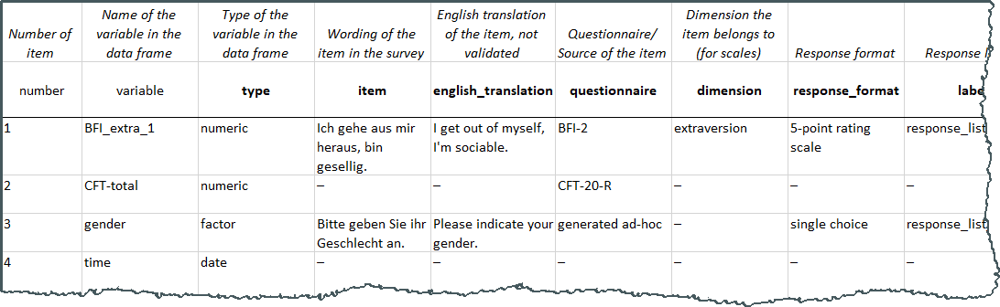

17 Focus: How to share?
17.1 Describe
Create a codebook!
When others, or your future self, engage with the dataset, they need to clearly comprehend the contents and structure of the data. This relates to the reuse part of FAIR data.
“Vagueness Makes Assessing Reproducibility a Nightmare
most successful reproductions are predominantly the result of tedious and time-consuming work information about the provided raw data was often difficult to understand, and information about the relevant variables, data manipulations, and the used statistical model was often vague or inaccurate” (Artner.etal.2021?)
Questions that might arise are:
- Which item label relates to which variable in the data set?
- What are the answer options (value labels) for this variable in the data set?
- Which items make a scale?
- Which items are reversed?
- …

Example from (Horstmann.etal.2020?)
- How and why to write a codebook: Link to paper which includes an example
- From a research data center: Straight to the point answer on FAQ
- Institute of Education Science’s “Guidelines for a Codebook”
- Information and overview by ICPSR on “What is a Codebook?”
- Option to semi-automatically create a codebook, particularly useful if you have labelled data: R codebook package
- Here is my introduction to the package including troubleshoot tips (use your browser to automatically translate it)
- There is also a codebook web app, in case you don’t want to use R
- Comprehensive guide on “Opening up and Sharing Data from Qualitative Research”, see p. 13 on contextualization
- “A guide to field notes”
- Further reading: “Engaging the challenges of sharing qualitative research data”
- Check out this codebook example created by the codebook R package
- What do you like about the codebook? What do you think could be improved to meet the goal of understanding the data set?
17.3 Connect
Enable researchers to find the data from the paper and the paper from the data, regardless of entry point.
For example:
- Researchers trying to replicate your study will easily find the data
- Researchers trying to use your study in a meta-analysis will easily find the data
- Researchers who know about your data will always be able to establish a clear link.
- Researchers stumbling over your data (e.g. on OSF) will easily be able to understand the context by accessing the paper
- …
Ideally, we use persistent identifiers. In our field, this usually means using a DOI.
Permanence: URLs can change or become broken over time if a webpage is moved or deleted. A DOI is designed to stay the same forever, even if the content is moved to a different location.
Reliability: Since DOIs are managed by official organizations (like Crossref, DataCite), they guarantee that the content will be accessible for a long time.
Easy Tracking: DOIs make it easy for others to track, cite, and reference your work consistently.
- osf.io offers one DOI per “component”, but only if you switched it to “public”
( click “Create DOI” under the title of your component) - zenodo.org offers one DOI per repository. You can also get a DOI for repositories that are restricted in their visibility.
( Switch “Do you already have a DOI for this upload?” to “No”)
Ideally
- You’ll put the DOI in a section of your paper that is not paywalled (that can be “data availability”, “open practices” or “supplemental material”)
- You’ll use standard fields in the repository to put the DOI that links to your paper
Imagine you’ll need to upload a new version of your data set. E.g. after expanding your sample to include data on other populations.
Simulate this by replacing your Excel file from the last task with a new excel file.
- Does the DOI change from before to after the upload?
- Is there an option to reference a specific version of your data set?
- Is there an option to automatically reference the latest version of your data set?